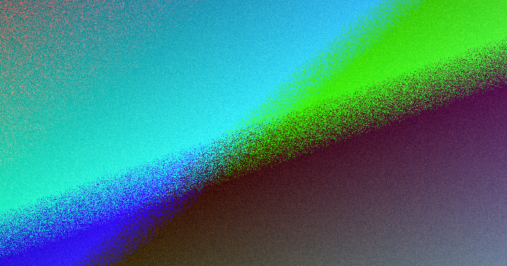

For local buyers, website design brisbane comparison compare them on the work each provider commits to, not the visuals.
Website Design Brisbane Comparison Explained
A useful comparison needs a fixed yardstick, otherwise every provider ends up graded on presentation. The parent guide frames that yardstick as visitor intent: what should a person understand first, what should they do next, and what information needs to appear before they are likely to make contact. Ask each provider to answer those questions in plain language and you get two things at once, a brief anchored to business use and a consistent basis for judging fit.
The framing also exposes approach. One provider may talk mostly about visuals while another talks about the visitor action and the page journey. Those are different ways of working, and the difference matters before any build starts. For the baseline checklist behind this angle, the guide to website design brisbane sets out what to check before you enquire.
Five scope checks to put to every provider
The parent page lists five scope checks that do not require technical expertise:
- Content: confirm whether you are expected to provide final wording, photos and approvals.
- Structure: ask for the key pages and the order a visitor is meant to follow.
- Enquiries: check what forms or contact paths will be used and where submissions are sent.
- Access: confirm who controls the domain, hosting logins and editable files after launch.
- Changes: ask how alterations are handled once the first concept is approved.
Put the same five questions to every provider and the answers become directly comparable. A provider who can explain the work clearly enough for a business owner to assess it is showing process discipline, whatever the price turns out to be.
Page experience checks that expose weak builds
Visual polish can hide a weak page structure. The World Wide Web Consortium publishes documents that define web technologies, and its Recommendations are widely treated as web standards. For a buyer, that translates into concrete checks on a real page: understandable headings, meaningful link text, workable forms and sensible behaviour on a phone.
These checks are the tie breakers when several proposals look similar on the surface. If a provider claims the site is built for results, ask how that claim shows up in the actual structure: the headings a visitor scans, the links that describe the action and the form a visitor completes. A polished mock-up shown in isolation cannot answer that. Only the page experience can, and it is the part a comparison most often overlooks. See the World Wide Web Consortium for the underlying standards documents.
Consumer clarity as a buying discipline
The Australian Competition and Consumer Commission explains consumer protections under Australian Consumer Law. That guidance does not tell you which design to pick, but it supports a disciplined buying approach: you should be able to understand what service is being offered and what you are agreeing to purchase.
In practice, that means reading every proposal for plain description rather than sales energy. If a provider describes the work as conversion-focused, ask how that intention appears in the pages, forms, calls to action and launch tasks. If the description stays broad, ask for a clearer explanation before you compare price or timing. A clearer description of the work also gives you a better basis for judging handover and what you will need to contribute during the project. See the Australian Competition and Consumer Commission for the underlying guidance.
Where local visibility fits the comparison
A comparison can also cover whether a build supports local discovery. Pages with clear headings and a defined action give search engines something understandable to index, and an enquiry form gives visitors somewhere to go once they arrive. Neither guarantees rankings, but both are features you can inspect before you commit. Ask each provider how the planned pages describe the service and the location, and whether content responsibilities are assigned from the start. Those answers show whether the build is arranged for enquiries from day one or whether visibility is treated as an afterthought to be patched later.
Who this comparison approach suits
This approach suits a Brisbane business that already knows a website needs to be built or replaced but does not want to choose on visuals alone. It helps owners who want a simple test of whether a proposal is organised around visitor action, readable content and a usable enquiry path. It is also useful when a first conversation jumps quickly to colours, layouts or examples from other sites. Those items matter, but they come after the provider can explain the business goal, the main pages, the content inputs and the handover position in terms you can check. Get those answers early and the next conversation becomes easier.
- Write the primary action. State the one main action you want visitors to take before you ask for a proposal, so every provider bids on the same goal.
- Request page and content detail. Ask each provider to list the pages, content responsibilities, forms and revisions in plain English.
- Check the page experience. Review headings, links, forms and mobile behaviour on a real page rather than relying only on mock-ups.
- Confirm post-launch control. Establish who will control access to the domain, hosting logins and editable files after launch.
| Check | A clear proposal states | A vague proposal avoids |
|---|---|---|
| Content | Who supplies final wording, photos and approvals | Leaves content duties unassigned |
| Structure | The key pages and the order a visitor follows | Offers only homepage concepts |
| Enquiries | Which forms are used and where submissions go | Treats contact handling as a later detail |
| Access | Who controls the domain, logins and files after launch | Defers the handover question |
| Changes | What counts as a revision once a concept is approved | Delays or charges without a stated process |
This guide covers comparing Brisbane website design proposals on clarity, scope and post-launch control; it does not rank or endorse specific providers.